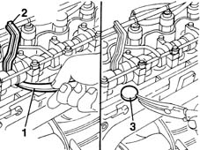

1036H18 VALVE TAPPETS - Adjust. following clearance check
- Path
- Procedures > 10 ENGINE UNIT > 1036 TIMING SYSTEM > 1036H tappets and rocker shafts > 1036H18 VALVE TAPPETS - Adjust. following clearance check
- Kind
- repair procedure (removal / refitting; the operation number is the code)
- Applies to
- engines: 1.9 JTD 8V; all production periods
- Interactive page
- https://sloeber94.github.io/elrnDB-fMltpl/en/#/2891377
Applies to: engines: 1.9 JTD 8V; all production periods
1. Lower the tappet using the appropriate tool.
 | Name | Country |
|---|---|---|
1 | Lever | 1.860.443.000 |
2. Fit a tool to hold the tappet down, then withdraw the pressure lever fitted previously.
| Name | Country |
|---|---|---|
2 | Lever | 1.860.724.001 |
3. Remove the valve clearance adjustment pad and replace it using a suitable shim.
Remove the tool for keeping the tappet lowered.
Repeat the above procedure for the remaining valves.
